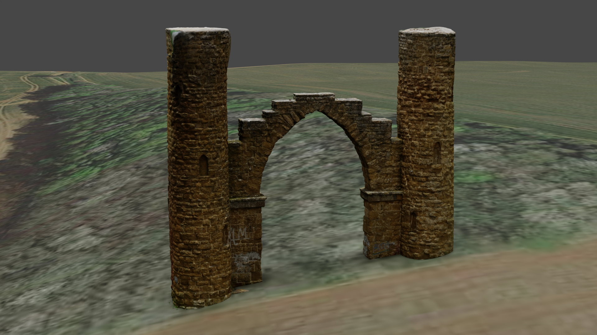

For the example mesh of Drayton Arch, 72 photographs were processed. Photos were taken with a DJI Mavic 3E flown manually with varying camera angles. Photos taken attempt to cover the full extent of the structure as much as possible at different viewing angles for more precise mesh generation.
There are a number of processing software available for this project. This example uses both Pix4D Mapper and Meshroom (Opensource project). The image directory was brought in where both programs read the metadata to extract information regarding the photos. Meshroom is more suited for producing mesh objects - as the name implies. It is possible to retrieve the pointcloud information from this but the intention of the project is the mesh. Georeferencing was also not completed in Meshroom. For this, Pix4D is best. However, in this project no ground control was used as just producing a high resolution mesh was the goal.
For creating just a mesh from the captured imagery the process is quite automated from here. After changing a few settings to increase point cloud density and number of matches, the images were processed by the program to produce both an RGB point cloud as well as a textured mesh as .obj file. Playing around with point cloud data will be covered in another post.
Once the processing has finished, the mesh file will be generated as .obj with a texture JPEG or PNG which is used by the .mtl file. This is now able to be viewed in various programs such as CloudCompare, Blender or even within Pix4d/Meshroom themselves. This could be the end result and left here. But I will look at creating a scene for rendering images or hosting on the web as in the example below.
Within Blender the .obj file was imported. It may seem like there is no texture but this is shown in rendered view to save on resources. I have added in a basemap using the blender addon 'Blender GIS'. More information on this addon will be available in a future post. Using Blender GIS I have added two meshes with both Google Earth satellite imagery and OSM imagery draped onto it. The image below shows the Google Earth result whereas the interactive example below is using the OSM drape.
Blender was also used to create the animation in the video below. By setting keyframes at camera positions along a generated path, the relevant image frames were able to be rendered and put together in video editing software. Blender can also be explored for more options in lighting and bringing in other components.
Preparing the files for the web was done using ThreeJS - a 3D Javascript library. A webserver was required for hosting the files to work with ThreeJS and so this was done using Vite. Following the documentation provided, I have used .glb files. For this the files were exported from Blender. The .obj files can be used within ThreeJS using an object loader.
The demo below is using Github Pages, as is all of this site, and so due to file size limitations I have had to slice the mesh into a number of pieces due to the complexity. This was also done in Blender before exporting each file as a .glb. Using Blender GIS I have brought in OSM building footprints to bring more depth to the distance of the model.
It is important to remember that ThreeJS uses Y as the upward direction. This is something I overlook when first working with it, leading to a lot of confusion when bringing in models. As such, the Z axis you may be familiar with using for 3D space is now the Y.
Finally, scene lighting and a camera with controls needs to be set up to allow the user to see the model and navigate around. In my example I have gone for Trackball controls. Alternatively, if you choose to follow this example in the documentation you will have a model with a static view that slowly spins in space. Further implementations may look at using Cesium 3D tilesets rather than our rough mesh from Blender. This model has also ignored georeferencing. More useful tools and analysis could be carried out with the models in the correct location geospatially. This is something that will be explored more using Pointclouds in the future.
Hopefully this short overview has given you an insight into using your captured imagery to produce a 3D mesh and a start into using ThreeJS to make interactive products.